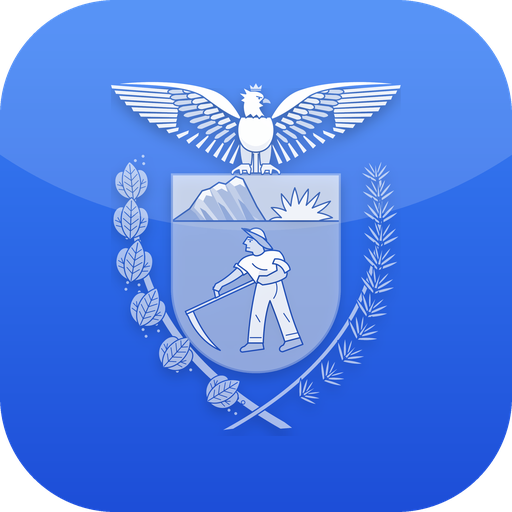

DATAPGE Service desk
Acompanhe chamados e receba alertas sonoros de novos tickets e mensagens, direto da bandeja do Windows.
Baixar DATAPGE.exe (Windows 64 bits)Versão portable, sem instalação, cerca de 74 MB.
- Basta baixar e executar o DATAPGE.exe; não precisa instalar o .NET.
- Requer o WebView2 Runtime, que já vem no Windows 11 e no Windows 10 atualizado.
- Se o Windows exibir o aviso do SmartScreen, clique em Mais informações e depois em Executar assim mesmo. O aplicativo ainda não é assinado digitalmente.
- Uma única cópia roda por vez; o ícone fica na bandeja do sistema, perto do relógio.